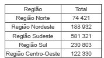
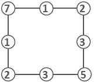

Respostas das atividades
Unidade 1
Capítulo 1
Encontre soluções
Página 15
1.
2. a) 1 botão azul e 6 botões vermelhos.
b) Azuis: 7 botões; vermelhos: 21 botões.
c) 28 botões.
3. # * = @
4. a) 5 triângulos e 7 quadrados.
b) 5 quadrados e 12 triângulos.
5. 40 cubinhos.
6. a) 7, 1
b) 64, 72
c) 63, 75
d) 12, 7
7. a) Sim. O número zero.
b) Não, pois os números naturais são infinitos.
c) O número zero.
8. a) Doze é maior do que dez.
b) Quarenta e seis é igual a quarenta e seis.
c) Sessenta e sete é menor que sessenta e nove.
9.
Página 16
10. a) O texto trata sobre a proteção de extinção de tartarugas da
Amazônia.
b) Resposta pessoal.
c) Expressar data, expressar período de tempo e quantificar os
filhotes que foram protegidos.
d) 12, 30, 40, 2019, 80 000 000
11. c)
12. d)
Capítulo 2
Encontre soluções
Página 20
1. a) U UIIII
2. a) 8
b) 32
c) 124
3. Esse sistema é utilizado: para designar papas e reis, séculos e datas; nos mostradores de alguns relógios; indicar capítulos de livros, etc.
4. a) 62
b) 244
c) 409
d) 730
e) 908
f) 2 609
5. a) XXXVIII
b) CCXLVII
c) CMLXXXV
d) VIII
e) LXXIV
f) CDLX
g) MMCMXLIV
h) XL
i) Resposta pessoal.
j) Resposta pessoal.
6. Observa-se a diferença de representação do número 4. O sistema de numeração romano, sofreu ao longo dos anos, um processo de evolução. A forma de representar o 4 como está no relógio da Basílica de São Pedro era do antigo sistema de numeração romano.
Página 21
7. a) O texto discorre sobre o direito à liberdade, ao respeito e à
dignidade de crianças e adolescentes.
b) Resposta pessoal.
c) Resposta pessoal.
d) Sistema de numeração romano.
Capítulo 3
Encontre soluções
Página 24-25
1. a) 9 vacinas.
b) 70 países.
c) 300 000 000
d) Resposta pessoal.
Página 26
2. a) 508
b) 70
c) 4 090
d) 2 040 001
3. 578, 587, 758, 785, 857, 875
4. a) Cinco mil, duzentos e oitenta e dois.
b) Trinta mil, seiscentos e nove.
c) Treze milhões, oitocentos e noventa e três mil.
d) Seis bilhões, quinhentos e
cinco milhões, novecentos e quarenta e seis mil, cento e sete.
5. a) 70
b) 5 000
c) 1 100
6. a) 3 000 + 900 + 60 + 2
b) 80 000 + 7 000 + 500 + 9
c) 10 000 + 2 000 + 6
d) 60 000 + 100 + 50
7. a) 7 000
b) 700 000
8. a) 6 903
b) 91 070
c) 805 002
d) 50 700
9. a) Desmatamento, destruição do hábitat e caça são três das
maiores causas do desaparecimento das espécies da fauna brasileira.
b) Resposta pessoal.
c) Resposta pessoal.
Página 27
10. a) Falsa. O número 1 365 678 possui 3 classes.
b) Verdadeira.
c) Falsa. O valor posicional do algarismo 2 no número 302 145 é 2
000.
d) Verdadeira.
11. O professor comprou 17 números.
12. a) 888
b) 987, 978, 897, 879, 798, 789
c) 996, 699, 969
13. b)
14. c)
304
Capítulo 4
Encontre soluções
Página 36
1. Corpos redondos: A, D, E, G, e J.
Poliedros: B, C, F, H , I, K.
2.
• Em todos os casos, o valor da expressão é igual a 2.
3. a)
b) Sim, é válida.
Página 37
4. a)
b) Elas são iguais entre si.
c) Sim, é válida.
d) A Relação de Euler é válida para todos os poliedros.
5. a) Prismas.
b) Os alunos podem ter várias interpretações, destacando, em suas
descrições, os cubos coloridos, as faces que apresentam quadrados e
círculos.
6. Resposta pessoal.
Página 38
7. Resposta pessoal.
8.
9. a) II; b) IV; c) I; d) III.
Página 39
10. a) O sólido geométrico é formado por 14 cubinhos.
b) O sólido geométrico é formado por 13 cubinhos.
11. Resposta pessoal.
Página 40
12. c)
13. c)
Página 41
14. c)
15. e)
Relembre
Página 44
1. 62 e 63.
2. Maior: 975; menor: 357.
3. 37 200 reais.
4. 10 algarismos.
5. a) 100
b) 999
c) 450
d) 450
6. 20 vezes.
7. 1 879 = MDCCCLXXIX; 14 = XIV; 40 = XL
8. a) III; b) II; c) I.
Página 45
9. Poliedros: 1, 2, 3, 4, 6, 7, 9, 10, 11. Corpos redondos: 5, 8, 12.
10.
11. a)
Unidade 2
Capítulo 1
Encontre soluções
Página 51
1.
2. Lúcia gastou 165 reais.
3.
Página 52
4. a) Comutativa.
b) Elemento neutro.
c) Associativa.
d) Comutativa.
e) Associativa.
f) Elemento neutro.
5. 383
6. 2 949
7. a) 459
b) 740
c) 4 204
d) 12 394
305
8. a) 70 b) 380 c) 250
9. 110
9. 110 10. Possibilidades: 800 + 123 + 841 = 1 764; 700 + 223 + 841, entre outras.
11. a) 133.
b) Cada vez que o sinal de igual é teclado, é acrescentado 20
unidades ao valor obtido.
12. Resposta pessoal.
Página 53
13. a) Sim, pois as três regiões juntas possuem um total de 151
escolas.
b) Sim, pois as duas regiões juntas possuem 598 escolas.
c) Resposta pessoal.
Encontre soluções
Página 56
1. O troco será de 40 reais.
2.
3. Faltará 84 km.
4. a) 122
b) 193
c) 235
d) 1 345
5. a) 383
b) 652
c) 802
d) 643
Página 57
6. a) Marcela gastou ao todo 56 reais.
b) Ela recebeu de troco 44 reais.
7. O Rio Amazonas tem 140 quilômetros a mais do que o Rio Nilo.
8. 2 114
9. Resposta pessoal.
10. a) 469
b) Cada vez que o sinal de igual é teclado, é subtraído 100 unidades
ao valor obtido.
11. Resposta pessoal.
12. A diferença entre a Estátua da Liberdade e o Cristo Redentor é de 55 metros.
13. c)
14. c)
Encontre soluções
Página 59
1. a) 80
b) 140
c) 200
d) 800
e) 12000
2. a) 110,80,160,160,
b) Uma calça e uma blusa; uma blusa e uma bermuda, entre outras
possibilidades.
3. Resposta pessoal.
4. Resposta pessoal.
5. a) 130
b) 170
c) 150
d) 90
Capítulo 2
Encontre soluções
Página 64
1. Serão necessários: 12 ovos, 12 batatas grandes, 90 g de fermento, 12 colheres de sobremesa de óleo, 6 colheres de sopa de margarina, 3 colheres de sobremesa de sal, 3 copos de leite, 3 xícaras de chá de açúcar, 2 100 g ou 2 kg e 100 g de farinha de trigo.
2. a) 5 ∙ 34
b) 6 ∙ 105
c) 4 ∙ 67
d) 2 ∙ p
e) 3 ∙ a
f) 7 ∙ m
3. a) 2 584
b) 10 200
c) 41 514
d) 16 211
4. Caixa 1 → 7 ∙ 7;
Caixa 2 → 5 ∙ 5;
Caixa 3 → 3 ∙ 7.
5. Bruno tem 390 bolinhas.
6. Luiz tem 15 opções de escolha.
7. É possível formar 50 códigos.
Página 65
8. a) 90
b) 306
c) 292
d) 550
e) 1 600
f) 820
9. d)
10. O refrigerador custou 1 495 reais.
11. a) 870
b) 1 080
c) 9 500
d) 33 600
e) 54 000
f) 281 000
12. Possui aproximadamente 408 alunos.
13. O cliente terá 18 possibilidades de refeição.
14. O dono faturará 570 reais.
15. a) 420
b) 3 335
c) 3 344
d) 861
e) 4 896
f) 1 274
g) 625
h) 2 484
16. 1 200 · 2 = 2 400; 12 · 100 · 2 = 2 400
Página 66
17. 5 + 5 + 5 + 5 ou 4 + 4 + 4 + 4 + 4
18. Resposta pessoal.
Encontre soluções
Página 67
1. a) Propriedade comutativa.
b) Propriedade do elemento
neutro. c) Propriedade distributiva.
d) Propriedade associativa
2. a) 240
b) 352
c) 84
d) 560
3. (4 - 4) ∙ 4 + 4 = 0 ∙ 4 + 4 = 4 4 + 4 + 4 - 4 = 8
Encontre soluções
Página 71
1. Manoel recebeu 1 627 reais, e Lucas 873 reais.
2. a) 111
b) 209
c) 420
d) 708
3. a) Resto 8.
b) Resto 11.
c) Resto 3.
d) Resto 5.
4. a) 1 243
b) 447
c) 1 450
5. 125 horas.
6. Uma blusa custou 41 reais e a outra custou 45 reais.
7. 22
8. 125
9. Resposta pessoal.
Encontre soluções
Página 72
1. a) 25
b) 52
c) 32
d) 81
e) 29
f) 10
2. a) Marcos ficou com 32 bolinhas de gude.
b) O navio chegou em Montevideo com 592 passageiros.
c) Carlos ficou com 297 reais.
Página 73
3. a) 45 + 52 - (27 + 16) = 54
b) 73 - (28 + 12) - 9 = 24
4.

5. a) Terminaram o ano 283 alunos.
b) Cada um pagou 32 reais.
c) O valor de cada prestação é 323 reais.
306
6. a) 89
b) 64
c) 32
d) 19
e) 78
Página 74
7. a) ÷, -
b) x, +
8. b)
Capítulo 3
Encontre soluções
Página 77
1. a) 10 ∙ (4 + 36) : 2 = 200
b) 10 ∙ 4 + 36 : 2 = 58
c) (10 ∙ 4) + 36 : 2 = 38
d) (24 + 18) : 3 – 10 = 4
e) 24 + 18 : 3 – 10 = 20
2. a) Em um prato Mariana deverá colocar 2 sólidos de 1 kg cada e 2
sólidos de 3 kg. No outro prato, 1 sólido de 1 kg, 2 sólidos de 2 kg
e 1 sólido de 3 kg.
b) 1 + 1 + 3 + 3 = 1 + 2 + 2 + 3
3. a) 33
b) 307
c) 25
d) 55
4. a) 3
b) 22
c) 648
d) 12
Capítulo 4
Encontre soluções
Página 80
1. a) 6²
b) 9²
c) 115
2. a) 128
b) 125
c) 12
d) 1
e) 1
f) 144
g) 27
h) 256
i) 1
j) 23
3. a) 8²
b) 10²
4. a) 4³
b) 5³
5. a) 1 000
b) 100 000
c) 10
d) 1
e) 10 000
f) 100
6. a) 1, 4 e 9
b) 16 e 25
c) 1, 4, 9, 16, 25, 36, 49, 64 e 81.
7. a) 9 261
b) 28 561
c) 262 144
d) 256
8. a) O jogo inventado por Sessa é o xadrez. As vantagens deste tabuleiro consiste em: estimular o raciocínio lógico, ativar a concentração, desenvolver a tomada de decisões, aguçar a memória, trabalhar a paciência, demandar
a capacidade de planejamento, aumentar a autoconfiança, proporcionar
o respeito ao adversário, além de exigir responsabilidade e instigar
a imaginação e a versatilidade.
b) Primeira casa: 20 = 1; segunda casa: 2¹ = 2; terceira
casa: 2² = 4; quarta casa: 2³ = 8; quinta casa: 24 = 16;
sexta casa: 25 = 32; sétima casa: 26 = 64;
oitava casa: 27 = 128; nona casa: 28 = 256;
décima casa: 29 = 512.
Encontre soluções
Página 82
1. a) 9
b) 7
c) 1
d) 11
e) 14
f) 17
g) 3
h) 4
i) 5
j) 10
k) 12
l) 2
m) 3
n) 4
2. 6 561
3. a) 32
b) 36
c) 41
d) 53
Encontre soluções
Página 83
1. a) 3
b) 16
c) 2
d) 10
2. a) 3
b) 43
c) 80
d) 212
e) 68
f) 20
g) 53
3. e)
Relembre
Página 86
1.
A população total do Brasil, de acordo com o censo 2010, é 190 755 799 habitantes.
2. 1 116
3. Menina: a diferença irá aumentar em 20 unidades. Menino: a soma aumentará em 15 unidades.
Página 87
4. 2 171
5. Poderão ser formados 18 uniformes diferentes.
6. a) 110
b) 730
c) 324
d) 9 500
e) 464
f) 806 000
7. Serão necessários, no mínimo, 15 ônibus.
8. a) 35
b) 125
c) 136
d) 170
9. a) 115
b) 300
10. a) 69
e) 20
b) 116
f) 38
c) 72
g) 83
d) 146
11. 15 opções
Unidade 3
Capítulo 1
Encontre soluções
Página 93
1.
2. DE e FG são congruentes e possuem 3 cm cada um. JK e RS são congruentes e possuem 4 cm.
3. a) Falsa. Uma reta não pode ser medida, pois é infinita em ambos
os sentidos.
b) Falsa. Um segmento de reta tem começo e fim. A semirreta é que
tem começo e não tem fim.
c) Verdadeira.
d) Verdadeira.
Capítulo 2
Encontre soluções
Página 100
1. a) 180º
b) 150º
c) 90º
d) 210º
307
2. a) 30º
b) 60º
c) 90º
d) 45º
Página 101
3. Resposta pessoal.
4. a) 50º
b) 30º
5. a) Ângulo raso.
b) Ângulo obtuso.
c) Ângulo reto.
d) Ângulo agudo.
6.
7. a) 105º
b) 52º
c) 275º
8. c)
Capítulo 3
Encontre soluções
Página 106
1. a) 6 lados. AB,
BC, CD,
DE, EF e
EF.
b) 6 vértices. A, B, C, D, E e F.
c) Há vários vértices que são consecutivos como: A e B, B e C, C e
D, D e E, E e F, F e A. Há vários vértices que não são consecutivos
como: A e C, A e D, A e E, B e D, B e E, B e F, D e F.
d) 9 diagonais. AC,
AD, AE,
DB, BE,
BF, CE,
CF, DF.
2. a) Quadrilátero, 2 diagonais.
b) Heptágono, 14 diagonais.
c) Pentágono, 5 diagonais.
d) Triângulo, não possui diagonais.
e) Quadrilátero, 2 diagonais.
f) Octógono, 20 diagonais.
3. Convexos: B, D, E; não convexos: A, C, F.
4. Polígonos regulares: B, D, F e G.
5. a) Pentágono. Nome dos polígonos: A: triângulo; B: hexágono; C: pentágono; D: dodecágono; E: pentágono; F: hexágono; G: pentágono; H: triângulo; I: pentágono; J:
heptágono; K: pentágono; L: quadrilátero; M: pentágono; N: quadrilátero; O: heptágono; P: pentágono; Q: quadrilátero; R: heptágono; S: decágono; T: quadrilátero; U: hexágono.
Encontre soluções
Página 109
1. a) Triângulo escaleno;
b) Triângulo isósceles;
c) Triângulo equilátero.
2. a) Triângulo retângulo;
b) Triângulo acutângulo;
c) Triângulo obtusângulo.
3. a) Verdadeira;
b) Falsa. Um triângulo acutângulo possui os 3 ângulos agudos;
c) Verdadeira;
d) Falsa. O triângulo que possui os 3 lados com medidas diferentes é
denominado de escaleno.
4. Triângulo medindo 4 cm, 7 cm e 10 cm.
5. 16 triângulos.
6. a)
b)
Encontre soluções
Página 113
1. Paralelogramos: B, C, E / Trapézios: A, D, F.
2. a) Falsa. Todo retângulo é um paralelogramo.
b) Verdadeira.
c) Falsa. Todo quadrado é um losango.
d) Falsa. Os trapézios apresentam um par de lados não paralelos.
3. a) Trapézio isósceles.
b) Quadrado.
c) Paralelogramos.
d) Retângulo.
4. a)
b)
Capítulo 4
Encontre soluções
Página 115
1. A-3; B-1; C-2
2. C.
3. A: Pirâmide de base pentagonal; B: Cone; C: Prisma de base triangular; D: Cilindro; E: Pirâmide de base hexagonal.
4. A.
Capítulo 5
Encontre soluções
Página 120
2. A (3, 2); B (4, 4); C (2, 5); D (5, 1); E (4, 0); F (5, 2); G (0,
3. a) A (1, 4); B (1, 1) e C (5, 1).
b) Triângulo retângulo.
c)Triângulo escaleno.
4. Retângulo.
5. P (2, 2).
6. Trapézio.
7. Repostas pessoais.
Capítulo 6
Encontre soluções
Página 125
1. Sim, pois todos os seus comprimentos foram multiplicados por 2.
Página 126
2. Resposta pessoal
3. A (4, 4); B (6, 3); C (4, 2) e D (2, 3). Resposta pessoal.
4. Não, pois as coordenadas não foram divididas por um mesmo número maior que 1.
308
5. A (6, 12); B (12, 12); C (12, 9); D (9, 9); E (9, 6); F (12, 6); G (12, 3) e H (6, 3). Resposta pessoal.
Relembre
Página 128
1. a) Ponto.
b) Plano.
c) Reta.
2. As retas m e n são paralelas, as retas t e m e as retas t e n são concorrentes.
3. a) Falsa. Um ângulo agudo mede menos de 90º.
b) Verdadeira.
c) Falsa. Um ângulo pleno mede 360º.
d) Falsa. O instrumento utilizado para medir o ângulo é o
transferidor.
e) Verdadeira.
f) Verdadeira.
Página 129
4. A: Triângulo isósceles e acutângulo; B: Triângulo isósceles e retângulo; C: Triângulo equilátero e acutângulo; D: Triângulo escaleno e retângulo; E: Triângulo escaleno e obtusângulo.
5. A: Retângulo; B: Trapézio isósceles; C: Paralelogramo; D: Trapézio retângulo; F: Losango; E: Quadrado.
6. 7 quadrados congruentes.
8 quadrados congruentes.
7.
8. b)
9.
Página 130
10. A (4, 11); B (9, 8); C (6, 5); D (9, 0); E (12, 2); F (3, 3); G (0, 7); A (4, 11); B (9, 8); C (6, 5); D (9, 0); E (12, 2); F (3, 3); G (0, 7); A (4, 11); B (9, 8); C (6, 5); D (9, 0); E (12, 2); F (3, 3); G (0, 7).
11. Sim, pois todas as medidas dos comprimentos da figura I foram divididas por 2.
12. a) Resposta pessoal.
b) Resposta pessoal.
c) Placa de parada obrigatória (Pare) - octógono; placa de pesca
esportiva - quadrilátero; placa de terminal rodoviário -
quadrilátero; placa preferencial - triângulo.
Página 131
13. c)
Unidade 4
Capítulo 1
Encontre soluções
Página 139
1. a) 1, 3, 5, 9 e 15.
b) 1, 2, 3, 4 e 6.
c) 1, 2, 4, 8 e 16.
d) 1, 2, 7, 8 e 28.
2. a) 1 214, 1 850 e 2 502.
b) 663 e 2 502.
c) 745 e 1 850.
d) Sim; 2 502.
3. a) 98
b) 99
c) 95
d) 96
4. a) Não, pois não é um número par.
b) Sim, pois a soma dos seus algarismos é um número divisível por 3:
1 + 6 + 3 + 2 = 12.
c) Sim, pois termina em 00.
d) Sim, pois os 3 últimos algarismos, da direita para a esquerda,
formam um número divisível por 8.
Página 140
5. a) 1, 2, 4, 5, 10, 20
b) 1, 3, 9, 27
c) 1, 3, 7, 9, 21, 63
d) 1, 2, 4, 5, 8, 10, 16, 20, 40, 80 O divisor comum entre 27 e 63 é
9; entre 20 e 80 é 20.
6. 888
7. 2, 5 ou 8.
8. a) 1 000
b) 1 002
c) 1 000
d) 1 002
e) 1 000
f) 1 008
9. a) Sim.
b) Sim.
c) Não.
d) Sim.
10. a) Sim.
b) De 4 em 4 anos.
c) Sim.
11. Resposta pessoal
12. Divisibilidade por 5.
13. Resposta pessoal
Encontre soluções
Página 141
1. a) 0, 2, 4, 6, 8, 10, 12
b) 0, 6, 12, 18, 24, 30, 36
c) 0, 3, 6, 9, 12, 15, 18
d) 0, 10, 20, 30, 40, 50, 60
e) 0, 5, 10, 15, 20, 25, 30
f) 0, 12, 24, 36, 48, 60, 72
2. a) 995
b) 100
c) 204
d) 594
Página 142
3. a) 36
b) 30
c) 44
4. a) Grupo A: 2, 4, 8, 10, 14, 16, 20, 22, 26, 28, 32 e 34. Grupo
B: 3, 6, 9, 12, 15, 18, 21, 24, 27, 30, 33 e 36. Grupo C: 1, 5, 7,
11, 13, 17, 19, 23, 25, 29, 31 e 35.
b) 12 alunos.
5. a) 124 e 146 não são números amigos. 220 e 284 são números
amigos.
b) 28 é um número perfeito. 36 não é um número perfeito.
Página 143
6. Resposta pessoal.
Capítulo 2
Encontre soluções
Página 145
1. a) Composto.
b) Primo.
c) Primo.
d) Composto.
e) Composto.
f) Primo.
2. 53 e 59.
3. 8 números: 2, 3, 5, 7, 11, 13, 17 e 19.
309
4. a) 3 ∙ 5
b) 3 ∙ 7
c) 2 ∙ 3 ∙ 5
d) 2 ∙ 3 ∙ 7
5. 101, 103, 107, 109, 113, 127, 131, 137, 139, 149.
Página 147
1. a) 120
b) 84
c) 45
d) 110
e) 75
f) 252
2. a) 2² ∙ 17
b) 3 ∙ 5²
c) 2² ∙ 3 ∙ 7
d) 2 ∙ 5² ∙ 7
e) 3 ∙ 17
f) 2 ∙ 3² ∙ 5
g) 2³ ∙ 13
h) 52 ∙ 7
Página 148
3. a) 14
b) 30
c) 25
d) 42
4. a) 5
b) 11
c) 3²
d) 2²
5. Elaine.
6. a) Sim, porque 9 = 3 ∙ 3 é um dos seus fatores.
b) Sim, porque 21 = 3 ∙ 7 é um dos seus fatores.
c) A = 180 e B = 210.
d) Sim, pois o produto A ∙ B = = 2 ∙ 2 ∙ 3 ∙ 3 ∙ 5 ∙ 2 ∙ 3 ∙ 5 ∙ 7 e
8 = 2 ∙ 2 ∙ 2 é um dos fatores.
e) 4
f) 35
Capítulo 3
Encontre soluções
Página 151
1. a) 10 cm
b) Serão 16 pedaços ao todo.
2. a) 6
b) 6
c) 5
d) 40
e) 6
f) 2
g) 2
h) 5
3. a) 1
b) 1
c) 1
d) 1
4. 19 prateleiras.
5. 14 m
6. a) V
b) F
c) F
d) V
7. Resposta pessoal.
Capítulo 4
Encontre soluções
Página 153
1. Depois de 6 horas. Será meio-dia.
2. 60 dias.
3. a) mmc (12, 24) = 24; mmc (5, 40) = 40; mmc (3, 27) = 27;
b) O mmc será o maior número.
4. a) mdc (4, 25) = 1; mdc (7, 9) = 1; mdc (3, 5) = 1.
b) Sim.
c) mmc (4, 25) = 100. mmc (7, 9) = 63; mmc (3, 5) = 15.
d) O mmc é o produto entre eles
5. 3 horas.
6. a) 21
b) 18
c) 30
d) 99
e) 36
f) 24
7. a) 72
b) 12
c) 40
d) 180
e) 70
f) 429
8. 60 dias = 2 meses.
9. Resposta pessoal.
Relembre
Página 155
1. a) F
b) F
c) V
d) V
e) F
f) V
g) F
h) F
2. Divisores comuns entre 24 e 36: 1, 2, 3, 4, 6, 12.
3. c)
4. 4
5. b)
6. 300 dias.
7. a) 600 alunos.
b) 3 cadernos, 2 canetas e 5 livros.
8. 6
Unidade 5
Capítulo 1
Encontre soluções
Página 164
1. a) Quatro sétimos.
b) Um oitavo.
c) Um décimo.
d) Dezessete nonos.
e) Três quintos.
f) Doze treze avos.
g) Quarenta e três vinte nove avos.
h) Um centésimo.
2.
5. a) 3/7
b) 1/3
c) 4/7
d) 3/4
e) 2/7
6. a) 9 copos.
b) 3/9 do suco são constituídos de suco concentrado.
c) 6/9 do suco são constituídos de água.
d) Se bebermos 2 copos, estaremos bebendo 2/9 de todo o suco.
e) 1 copo de suco concentrado e 2 de água.
f) 1/3
g) 4/6 = 2/3
7. a) 15/60
b) 2/7
c) 7/12
d) 25/365
e) 5/6
Página 166
8. a) 90º; 1/4
b) 225º; 5/8
c) 120º; 1/3
d) 270º; 3/4
310
9. Compareceram às aulas 27 alunos.
10. O vencedor obteve 2 500 votos.
11. O valor máximo de cada prestação poderá ser de 320 reais.
12. A capacidade total da caixa é de 1 000 litros.
13. Resposta pessoal.
Página 167
14. b)
Encontre soluções
Página 169
1.
2. a) 21/5
b) 23/7
c) 17/10
d) 11/2
3. a) 3 4/5
b) 3 1/7
c) 1 4/9
d) 4 5/8
4. a) 4/6
b) 8/6 ou 1 2/6
Encontre soluções
Página 171
1. a) 28/48
b) 27/72
c) 52/60
d) 33 55
2.
3. a) e d)
4. a) 2/4 ou 3/6 ou 4/8
b) 4/6
c) 6/8
d) 2/6
5. a) 10/12
b) 18/33
c) 12/28
d) 24/15
6. a) 15/20
b) 3/4
7. a) 5/4
b) 7/2
c) 3/2
d) 1/2
e) 2/3
f) 9/17
8. 2/3
Página 172
9. a) 1/2
b) 12
10. a) 1/6
b) 1/2
c) 1/4
d) 1/2
e) 1/4
f) 5/12
g) 1/5
h) 1/8
i) 1/9
11. b)
12. c)
Encontre soluções
Página 176
1. Joana.
2. O segundo.
3.
4. Juca.
5. 1/11, 1/8, 1/7, 1/5
6. 5/2 ,7/6 ,13/18 ,2/3
7. a) Ficção científica.
b) Comédia.
Capítulo 2
Encontre soluções
Página 180
1. a) 2/5
b) 4/5
c) 1/5
2. 1/8
Página 181
3. a) 18/3 = 6
b) 15/13
c) 1/10
d) 9/9 = 1
e) 6/8 = 3/4
f) 10/5 = 2
4. a) A = 3/8
B = 2/8
C = 1/8
D = 11/21
E = 8/21
b) A + B - C = 1/2
D - E = 1/7
c)
5. a) 23/20
b) 4/21
c) 83
d) 23/30
e) 61/56
f) 6
6. a) Na primeira meia hora.
b) 43/45
c) 2/45
Página 182
7. a) 5/12
b) Eduardo.
c) 1/3
8. a) Animação: 1/2 ; aventura: 1/4; comédia e suspense: 1/8
b) 5/8
c) Suspense.
d) 7/8
e) 3/8
9. 8/15
10. a) 47/6
b) 102/35
311
Página 183
11. a) 1/15
b) 1/4
c) 27/20
d) 43/30
e) 22/45
f) 163/42
12. 58 reais.
13. 6/35
14. 1/4
15. Resposta pessoal.
16. Resposta pessoal.
17. Rosa.
18. d)
Encontre soluções
Página 186
1. Luciana deverá fazer 3 receitas: 9 ovos, 9/2 xícaras de farinha, 3/2 xícaras de óleo, 3/2 xícaras de leite, 3 colheres de chá de fermento, sal a gosto, 450 gramas de presunto picado, 450 gramas de queijo picado e 6 tomates temperados com cheiro verde, sal e óleo.
2. a) 10/3
b) 8
c) 7
d) 11/5
e) 1
f) 1
g) 40/3
h) 6
3. Do total de meninos do 6.º ano, 3/20 jogam futebol.
4. Foram vendidos 75 carros com ar-condicionado.
5. Ao todo, Gabriela e Bruna venderam 31 números de rifas.
6. a) 8/21
b) 6/5
c) 2/3
d) 70
e) 10/21
f) 5/9
g) 2
h) 5/3
7. O trecho feito de automóvel representa 13/18
Página 187
8. a) 9/10
b) 19/12
c) 31/36
d) 9/10
9. Restam 146 lugares.
10. O candidato A obteve 1 500 votos, e o candidato B, 2 000 votos.
Encontre soluções
Página 190
1. a) 4/5
b) 7/8
c) 13
d) 17/12
e) 1/9
f) 1
2. 19/13
3. a) 9
b) 7/2
c) 20
d) 5/4
e) 0
f) 1/18
g) 1/17
h) 10/7
4. A fração que representa a quantidade de melão que cada um comeu é 1/6.
5. Márcia precisará de 32 garrafas.
6. Três amigos estão viajando juntos.
7. a) 2/5
b) 1
c) 6
d) 1
e) 2
f) 1/2
g) 5/3
h) 2/9
8. a) 38/15
b) 97/20
c) 80/11
d) 5/2
e) 1
f) 24/35
9. 40 garrafinhas.
10. 8 potes.
Encontre soluções
Página 191
1. a) 4/9
b) 27/8
c) 1/4
d) 1/100 000
e) 1
f) 100/121
2. 25/36
3. 8/125
4. 1/243
5. 169/81
6. a) 48/5
b) 20
c) 83/48
d) 37
Encontre soluções
Página 192
1. a) 4/5
b) 7/9
c) 6/11
d) 8/13
e) 10/14
f) 1/100
g) 5/4
h) 5/2
i) 4/3
j) 5/2
2. a) 13/2
b) 29/80
c) 7/18
d) 19/24
e) 71/90
Capítulo 3
Encontre soluções
Página 194
1. a) 2%
b) 17%
2. a) 50%
b) 25%
c) 40%
d) 32%
e) 84%
3. 24%
4. c)
Encontre soluções
Página 197
1. O valor é de 33 reais.
312
2. Jonas recebeu 9 000 reais, Henrique 6 400 reais e Maria 4 600 reais.
3. O salário será de 1 272 reais.
4. a) 24
b) 105 reais.
c) 224 reais.
5. a) 1 635 reais.
b) 2 336 reais.
c) 72 m².
6. Resposta pessoal.
Relembre
Página 201
1. As placas km 12, km 16 e km 28 ficarão, respectivamente, em D, E e H.
2. 1/4
3. d)
4. 27 mil reais.
5. a)
6. 18 litros.
Página 202
7. d)
8. 3 litros.
9. d)
10. a) 41/20
b) 1/7
11. a)
12. a)
Página 203
13. a) 81% = 81/100
b) 80% = 80/100
14. Nessa cidade, há 4 104 mulheres menores de 18 anos.
15. c)
16. Marcos gasta 9 minutos com alongamento inicial, 6 minutos com aquecimento, 36 minutos com exercícios e 9 minutos com alongamento final.
17. a) 1/3
b) 2/3
18. 1 390 mL.
Unidade 6
Capítulo 1
Encontre soluções
Página 214
1. a) 100 centavos
b) 1/100
c)
d) Primeiro item - R$ 5,46 / segundo item - R$ 2,57 / terceiro item - R$ 10,30 / quarto item - R$ 50,50 / quinto item - R$ 100,03 / sexto item - R$ 0,08 / sétimo item - R$ 1,17.
2. a) Dois inteiros e onze centésimos.
b) Três décimos.
c) Quatro centésimos.
d) Cento e doze milésimos.
Página 215
e) Cinco milésimos.
f) Um inteiro e vinte e um centésimos.
g) Duzentos e quatro milésimos.
h) Quarenta e dois milésimos.
3. a) 1,5
b) 0,08
c) 0,011
d) 3,49
e) 53,7
f) 0,007
g) 0,0621
h) 0,00019
4. a) 68/1000
b) 9/10
c) 1405/100
d) 803/100
e) 2/10000
f) 1007/1000
g) 7943/1000
h) 25/10
5. a) <
b) =
c) <
d) >
e) =
f) <
g) >
h) <
6. Primeiro item: b), c) e d).
Segundo item: a) e c).
7. a) Ryan Lochte (EUA) - ouro; Thiago Pereira (Brasil) - prata; Kosuke Hagino (Japão) - bronze.
8. A: 0,6; B: 1,9; C: 2,2. D: 4,9; E: 5,4; F: 6,1; G: 6,7. M: 12,2; N: 13,5; O: 14,3; P: 14,9.
9. 0,3; 0,7; 1,3; 2,5.
10. 21/10
8/10
33/10
9/10
Capítulo 2
Encontre soluções
Página 218
1. a) Milímetro.
b) Quilômetro.
c) Metro.
d) Metro.
e) Centímetro.
f) Quilômetro.
g) Milímetro.
h) Quilômetro.
i) Metro.
j) Centímetro.
2. Resposta pessoal.
Página 219
3. 34 mm; 50 mm; 80 mm.
4. c, f, b, d, a, e, g.
5. c)
6. b)
Capítulo 3
Encontre soluções
Página 223
1. a) Joana gastou ao todo R$ 16,96.
b) Joana recebeu de troco R$ 3,04.
2. Gabriela gastou R$ 135,15.
3. a) 14,535
b) 5,99
c) 1,6
d) 3,9
e) 5,59
f) 15,09
4. 1 900 metros.
5. a) Falta 1,44.
b) O número é 2,91.
c) O número é 8,31.
6. Ana comprou 4,55 m de tecido.
7. ► = 7, ● = 4, ♣ = 8, ♦ = 6
313
Página 224
8. c)
9. b)
Encontre soluções
Página 228
1. a) 569,8
b) 2,9
c) 3,4
d) 36,8
e) 25 001
f) 0,7
g) 0,9874
h) 1,178
i) 0,006
j) 1,23
k) 0,0003
l) 0,9
2. a) 50 mm
b) 6 000 m
c) 1 200 cm
d) 0,00008 km
e) 0,1 dm
f) 5,4 cm
3. a) Autódromo de Interlagos: 305,939 km. Circuito de Monza:
307,029 km.
b) A quantidade de quilômetros percorridos é maior no circuito de
Monza.
Página 229
4. Fita azul: 52,5 m.
Fita vermelha: 49,45 m.
Fita verde: 47,64 m.
Fita amarela: 11,91 m.
Encontre soluções
Página 231
1. Rogério gastou R$ 315,77.
2. a) 0,07
b) 0,65
c) 209,1
d) 0,014
e) 0,066
f) 6,56
g) 6
h) 16
3. A nova medida do lado do triângulo é igual a 18,6 cm.
4. a) 12,7 cm.
Página 232
b) 9 753,6 m
c) 81,28 cm
d) 609,6 km
e) Longitude: 9 144 cm = 91,44 m / largura: 4 846,32 cm = = 48,4632
m.
5. Foram gastos 58,4 cm.
6. a) 20,3
b) 6
c) 77,5
d) 12,71
7. Juliano gastou ao todo R$ 38,41.
Encontre soluções
Página 234
1. Cada pedaço de madeira terá 1,5 metros.
2. a) 2,5
b) 1,6
c) 0,5
d) 0,25
e) 1,25
f) 6,5
g) 3,42
h) 5,4
3. a) Decimal finito; 2,8.
b) Decimal finito; 0,32.
c) Decimal infinito e periódico; 1,6.
d) Decimal infinito e periódico; 2,85.
e) Decimal finito; 7,4.
f) Decimal infinito e periódico; 8,14.
4. Paulo: 73,33 km/h.
Marcos: 83,2 km/h.
Juliano: 76,5 km/h.
Encontre soluções
Página 237
1. R$ 32,12
2. a) 16,2
b) 4,5
c) 0,4
d) 8,2
e) 540
f) 3,5
g) 8
h) 6,3
3. Marcela pagou R$ 2,81 pelo litro da gasolina.
4. O valor de cada prestação será igual a R$ 256,05.
5. a) 13
b) 13 000
c) 1 300
d) 60
e) 6
f) 600
Página 238
6. a) Corresponde a 241 milhas.
b) O monitor tem 21,5 polegadas.
7. a) 12,3
b) 11
c) 30
d) 0,45
e) 0,15
8. b)
Encontre soluções
Página 239
1. a) 1,44
b) 5,3
c) 0,0016
d) 0,00001
e) 1
f) 1,96
g) 9,3
h) 1
2. a) 0,13
b) 0,11
c) 0,26
3. a) 33,51
b) 12,41
c) 13
d) 3,75
e) 36,09
f) 1,4
Encontre soluções
Página 241
1. a) 0,75
b) 0,08
c) 0,23
d) 0,059
e) 1,43
f) 0,146
g) 0,0011
h) 2,57
2. a) 60%
b) 50%
c) 62,5%
3. a) R$ 22,50
b) R$ 37,50
c) R$ 84,60
d) R$ 276,00
4. R$ 106,40
5. O candidato deve obter, no mínimo, 41 727 votos.
6. R$ 81,00
Página 242
7. Brasil: 75%.
Itália: Aproximadamente 66,6%.
Alemanha: 100%.
Argentina: Aproximadamente 66,6%.
Uruguai: 25%.
Inglaterra: Aproximadamente 33,3%.
França: 100%.
Espanha: Aproximadamente 16,6%.
8. Júlia pagou R$ 1.484,10
9. d)
314
Relembre
Página 245
1. a)
2. São verdadeiras as alternativas b, d, e, f, i.
3. a) 9
b) 1 040
c) 0,7
d) 7 850
e) 93,1
f) 307
g) 12,6
h) 0,35
i) 0,0002
j) 0,017
k) 8,92
l) 0,005
4. a) 1 300 cm
b) 1 000 m
c) 450 mm
d) 1 000 mm
e) 6,78 m/p>
Página 246
5. a) 0,766
b) 13,58
c) 3,01
d) 5,54
6. a) R$ 920,80
b) Telefone: R$ 107,88 / Televisão: R$ 975,36.
c) R$ 162,44
7. Alto Tietê: 61,9704 bilhões de litros de água.
Guarapiranga: 82,3472 bilhões de litros de água.
Página 247
8. a) 60/100; 33/100 ; 17/100.
b) 103 200 000
c) 18%
9. a) 7 + 0,08 = 7 × 1 + 8 × 0,01
b) 13 + 0,6 + 0,05 = 1 × 10 + 3 × 1 + 6 × 0,1 + 5 × 0,01
c) 4 + 0,3 + 0,05 + 0,002 = 4 × 1 + 3 × 0,1 + 5 × 0,01 + 2 × 0,001
10. a) 807,06 b) 72,094 c) 0,6501
Unidade 7
Capítulo 1
Encontre soluções
Página 251
1. a) 20 cm
b) 9 cm
c) 21 cm
d) 42 cm
2. Cada lado mede 7,5 cm.
3. Seu perímetro é igual a 36 cm.
4. 15 cm
Página 252
5. a) O polígono D.
b) Os polígonos A e E.
6. Medida do lado do triângulo: 4 cm. Perímetro do octógono: 32 cm.
7. Perímetro: 70,8 cm.
8. O perímetro é de 346 m.
9. a) 116,6 + 3,4 = 120 m
b) 120 : 4 = 30 m
10. Medida do lado do quadrado: 5,5 cm.
Página 253
11. 7,2 km
12. b)
13. d)
Capítulo 2
Encontre soluções
Página 257
1. A: 14u; B: 4,5u; C: 8u; D: 4u.
2. a) Metro quadrado.
b) Centímetro quadrado.
c) Metro quadrado.
d) Quilômetro quadrado.
3. a) A: P = 12 cm; B: P = 12 cm;
C: P = 16 cm.
b) A: A = 9 cm²; B: A = 8 cm2;
C: A = 12 cm².
c) Maior área: C; Maior perímetro: C.
d) A: A = 900 mm2; B: A = 800 mm2; C: A = 1 200 mm².
Página 258
4. a)
b) Não. Porque o perímetro irá depender do formato da figura geométrica.
5. e)
6. b)
Capítulo 3
Encontre soluções
Página 263
1. a) 24 cm².
b) 15,12 cm².
c) 28,81 cm2.
d) 25 cm².
2. O lado do quadrado mede 14 cm.
3. a) Cozinha: 8,61 m².
b) Home-office: 4,03 m².
c) Suíte 1: 8,0325 m².
d) Lavabo: 1,955 m².
e) Closet: 6,24 m².
f) Suíte master: 9,92 m².
Página 264
4. A: 400 cm².
B: 3 872 cm².
C: 237,16 cm².
5. 58,2 cm²
6. Marcela gastará R$ 159,03.
7. a) Verdadeira.
b) Verdadeira.
c) Falsa.
8. a) Sim, pois todos os seus comprimentos foram multiplicados por
2.
b) Figura A: 4 u.c.; Figura B: 8 u.c.
c) Figura A: 16 u.c.; Figura B: 32 u.c.
d) Figura A: 16 u.a.; Figura B: 64 u.a.
e) 4 u.c - 8 u.c / 16 u.c - 32 u.c/
16 u.a - 64 u.a. Ao multiplicarmos a medida dos lados por 2, o
perímetro também é multiplicado por 2. O mesmo não ocorre com a
área.
Página 265
9. a) 9 u.c - 3 u.c. / 36 u.c - 12 u.c/ 81 u.a - 9 u.a.
b) Ao dividirmos a medida dos lados por 3, o perímetro também é
dividido por 3. O mesmo não ocorre com a área.
10. O apartamento é composto por: 3 dormitórios, sendo 1 suíte, 1 sala com 2 ambientes, cozinha com lavanderia e 1 banheiro. b) Resposta pessoal.
11. Resposta pessoal
12. d)
13. a)
Capítulo 4
Encontre soluções
Página 267
1. a) 360 s
b) 1 380 s
c) 3 840 s
315
315
2. a) 1h33min2s
b) 2h20min32s
c) 3h20min
3. 1h43min57s
4. Da 1.ª para 2.ª colocada: 1min14s; Da 2.ª para 3.ª colocada: 13s.
5. Resposta pessoal.
6. a) 13 horas.
b) 20 horas.
Encontre soluções
Página 269
1. Resposta pessoal.
2. Resposta pessoal
3. a) 39,4 °C
b) sim.
4. 180°C
Capítulo 5
Encontre soluções
Página 273
1. a) Medicamentos, entre outros.
b) Ouro, queijo, presunto, entre outros.
c) Frutas, carnes, arroz, entre outros.
2. a) 46 000 g
b) 1,2 g
c) 98 g
d) 0,075 g
3. 980 g
4. R$ 3,60
5. 1,5 + 0,75 + 2,8 = 5,05 kg
6. R$ 70,00
Página 273
7. a)/p>
8. a)
9. b)
10. d)
11. A venda mais lucrativa é quando ela vende as flores quando colhe.
12. A primeira panela deverá ter 296 g de carne e a segunda 704 g.
Capítulo 6
Encontre soluções
Página 281
1. a) 20 cm³
b)16 cm³
c) 36 cm³
d) 27 cm³
2. a) 560 cm³
b) 640 cm³
3. a) 0,000002 m³
b) 34 m³
c) 122 m³
4. 64 cm³
5. 90 cm³
6. b)
7. Resposta pessoal.
Capítulo 7
Encontre soluções
Página 286
1. a) 1 L
b) 1,5 L; 1 L; 200 mL
c) 5 L; 1,5 L; 500 mL
d) 900 mL
2. 20 copos
3. a) 0,35 L
b) 750 000 L
c) 0,3 L
d) 8 000 L
e) 0,5 L
f) 1 L
g) 240 000 L
h) 0,001 L
4. a) 5 000 mL
b) 34 000 mL
c) 200 mL
d) 630 mL
5. 36 litros.
6. 1000 litros.
7. 2770 litros
8. A água transbordará
9. 9 000 litros.
10. 2400 litros.
Página 287
11. a) Resposta pessoal.
b) Resposta pessoal.
c) Resposta pessoal.
d) Resposta pessoal.
e) Resposta pessoal.
f) Resposta pessoal.
g) 35 litros de água.
Página 288
h) Economizamos 9,8 L de água. Representa 49 copos de água.
i) 1,8 m³
12. e)
Encontre soluções
Página 290
1. 50%
2. 8 possibilidades de combinações ao lançarmos 3 vezes uma moeda.
3. 25%
4. Aproximadamente 33%.
5. a) 50%
b) 60%
c) 50%
Relembre
Página 291
1. a) 5,6 cm
b) 8,4 cm
c) 11,2 cm
d) 11,2 cm
2. a) 12 cm
b) 11 cm
c) 12 cm
d) 16 cm
3. Cláudia irá gastar R$ 117,03.
Página 292
4. b)
5. 9 m²
6.
7. 36 cm²
8. 36 cm²
Página 293
9. c)
10. Carmem pagou R$ 58.650,00.
11. As medidas do painel são 1,5 m por 0,9 m.
12. Serão recortados 15 retângulos
13. d)
Página 294
14. a)
15. b)
16. c)
17. c)
18. b)
19. b)
Página 295
20. d)
21. c)
22. d)
316